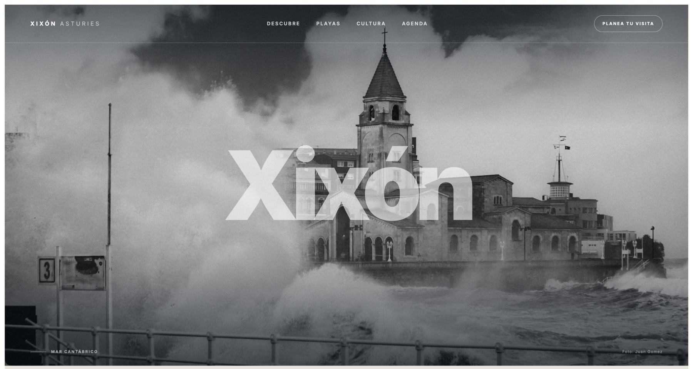

Dónde está
En la costa central de Asturias, al norte de España, frente al mar Cantábrico y a unos 30 minutos de Oviedo.

Descubre Xixón
Xixón es una ciudad atlántica, cercana y vivible. Combina la energía de su costa con barrios tranquilos, cultura, gastronomía y una fuerte identidad asturiana. Aquí el ritmo urbano convive con la playa y la naturaleza.
En la costa central de Asturias, al norte de España, frente al mar Cantábrico y a unos 30 minutos de Oviedo.
A pie, sin prisas y mucho al aire libre. Es compacta, acogedora y activa durante todo el año.
El verano trae playa y festivales; primavera y otoño ofrecen luz suave, menos gente y paisajes intensamente verdes.
Cuatro formas de descubrirla
Playas de Xixón
Cuatro formas de acercarse al Cantábrico sin alejarse de Xixón. Pulsa cualquier fotografía para ver la pantalla completa y utiliza el mapa para llegar directamente.
La gran playa urbana de la ciudad, reconocible por su larga bahía y la escalera de La Escalerona. Ideal para pasear, nadar o iniciarse en el surf.
Ruta: recorre el paseo del Muro desde San Pedro hasta el río Piles, un trayecto llano de unos 3 km.
Abrir en Google MapsUna playa resguardada, familiar y muy accesible junto al acuario y el puerto. Sus aguas suelen ser más tranquilas que las de San Lorenzo.
Ruta: llega caminando desde Cimavilla por el puerto deportivo; el paseo marítimo es llano y dura unos 20 minutos.
Abrir en Google MapsUna pequeña playa de arena rodeada de laderas verdes, a pocos kilómetros de la ciudad. Tiene ambiente natural y buenos servicios en verano.
Ruta: la senda de la Ñora baja desde Quintueles entre bosque y molinos hasta la playa, cuesta abajo y sin prisas.
Abrir en Google MapsLa costa cambia con las mareas. Consulta el estado del mar antes de acercarte a las calas y disfruta siempre con cuidado.
Cultura asturiana
En Xixón la identidad aparece alrededor de una mesa, en una romería o al escuchar una gaita. Acércate a descubrir y usa cada plato para conocer su historia.
Elaborado con fabes de la Granja, cocidas a fuego lento junto al compango. Su caldo destaca por una textura trabada e intensa.
Una bebida alcohólica tradicional y social hecha de manzana mayada, sin gas ni azúcares añadidos, que se escancia y se bebe al momento en culines.
Cremoso, aromático con canela y caramelo, y terminado con una fina capa de azúcar quemada.
Compuesto por dos filetes de ternera grandes que envuelven un relleno de jamón serrano y queso, empanados y fritos.

Los bailes tradicionales asturianos son colectivos y enérgicos. La danza prima reúne a los participantes en un círculo; otros bailes, como el corríu y la jota asturiana, combinan pasos, giros y el ritmo de la gaita y el tambor.
Falda larga, mandil, camisa blanca, corpiño ajustado, pañuelo y dengüe sobre los hombros.
Camisa blanca, chaleco, calzón corto, faja y monteras picones, el sombrero más reconocible de estas celebraciones.
El sonido que acompaña bailes, procesiones y celebraciones.
El asturiano sigue vivo en la música, la literatura y la conversación.
Fiesta popular al aire libre: música, baile, comida y comunidad.